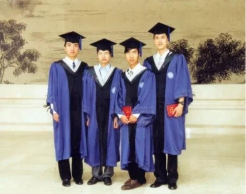
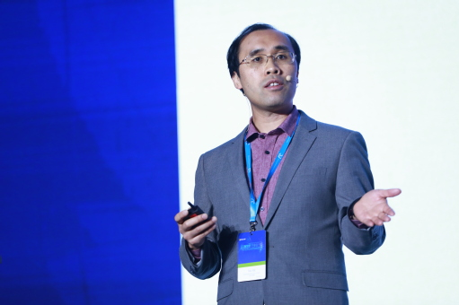
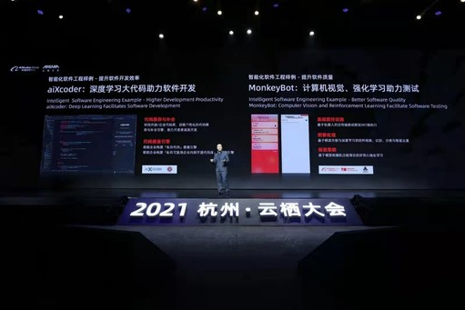

谢涛，北京大学计算机学院讲席教授，高可信软件技术教育部重点实验室（北京大学）副主任，北京大学新工科建设委员会副秘书长。他于1997年在复旦大学计算机科学系获得学士学位。他曾获科学探索奖，国家自然科学基金委海外杰出青年科学基金以及其延续资助，美国NSF Faculty CAREER Award，ACM SIGSOFT杰出服务奖，IEEE计算机协会软件工程技术委员会（TCSE）杰出服务奖等。他的主要研究领域包括软件工程，系统软件，软件安全，可信人工智能。
2021年，谢涛教授入选了中国计算机学会（CCF）会士，不久前，他又当选了国际计算机学会（ACM）Fellow，成为第二位同时当选ACM Fellow、电气电子工程师学会（IEEE） Fellow、美国科学促进会（AAAS） Fellow、CCF会士的学者。母校向他表示祝贺的同时，也希望谢老师能给母校的师生做些深度交流，谢老师一直对母校充满着感情，由此我们策划了本次访谈，希冀给未来的复旦学子们更多的启迪和帮助。
【一 复旦之行】
1.您为什么选择了软件工程作为您的研究方向？
谢涛：我1992年考入复旦大学计算机系，当时系内共设有3个专业，我选择了其中的计算机软件专业。最初我并没锁定软件工程这个具体的方向，只是选择了在计算机软件这个大方向上去学习和深造。我在选择专业时也受到了我哥哥谢源的影响，他比我早一年上大学，读的是电子工程系，相当于是计算机硬件方向。这样一来，我们兄弟俩都是在信息科学技术领域学习，但又在专业方向上有一些区分度。
我第一次参与的科研工作是在计算机网络方向上。那是在复旦求学的第三年，我加入到张根度教授所领导的网络与信息工程中心去做电网SCADA系统的相关工作。另外一个经历是暑期我在上海的一个期货经纪公司作为兼职软件开发项目负责人，带领着两个学弟去开发一个期货交易管理子系统。这个子系统大体可以看成是一个数据库应用软件，当时我写了大量业务逻辑相关的SQL存储过程并还挺得心应手的，也对数据库方向萌生了不少兴趣。这个项目也相当于是我首次在产业实践中全面地尝试软件项目管理和软件开发。
后来到了1996年底（大四上学期），我拿到了复旦大学保送研究生的资格，当时就考虑是不是可以争取到去北京大学攻读硕士学位，这是因为我哥哥是在清华读的本科，想要和他有些差异，而且在复旦的学习经历让我对也同是综合性大学的北大很向往。不过不像如今，当时外校、跨校推荐保送生还是很少见的，而且也没有官方渠道去联系这样的机会。我在中学、大学阶段的业余爱好和特长是足球，曾是复旦校队队员和计算机系队队长，机缘巧合的是足球帮我圆了我的北大求学梦。
当时我联系到一个在北大计算机系读本科的高中同班同学兼球队队友，通过他联系到了爱好踢球的北大计算机系团委书记周有光老师，把推荐保送到北大读硕的申请材料递了过去。周老师对我的申请很感兴趣，因为他有心助力振兴北大计算机系足球，而确实后来北大读硕期间我也不负众望和队友们一起在绿茵场拼搏，为北大计算机系夺得两届北大杯冠军。由于我本科成绩在班级前列，各方面都比较全面发展，推荐保送的事宜也就进展得很顺利。这个事定下来之后，一次周老师和我通电话要确定硕士生导师，告诉我北大计算机系包含有两大块，分别是由杨芙清院士领导的计算机软件方向以及由王选院士领导的计算机应用方向。当时在电话中周老师询问我在这两大方向选哪个，我也就是经过大概两三秒的思考后决定选择了软件方向，原因除了北大在软件方向上是国内排头兵外，还包括软件方向比较吻合自己的本科专业背景和兴趣。后来我就进入到杨芙清院士领导下的北大软件工程团队，由梅宏教授指导我开展了3年的硕士生研究。去北大读硕前，我在复旦赵文耘教授的指导下完成了软件工程方向的本科毕业论文。
回到这个问题，从事软件工程相关的研究其实就是1996年底那两三秒思考后就做出的决定。回想起来，自己当时的选择也是很正确、很幸运的，不光是后面自己在成长道路上有幸得到杨芙清、梅宏、David Notkin等这些恩师们的教诲，而且软件工程方向很适合我并符合我的兴趣点。自己后面也持续在这个方向上耕耘，包括之后2000年去美国念博士以及自己做教授后的研究方向都一直是软件工程。
2.在复旦大学的求学经历对您各个方面产生了哪些影响呢？有遇到过什么让您受益匪浅的人或事吗？
谢涛：在复旦本科的经历为我后续的科研工作打下了全面且坚实的基础，这既包括知识层面又包括思维层面。我记得大一大二学数学分析课的时候比较流行去做吉米多维奇习题集，在思考解题思路的过程中我学到了很多。另外复旦设置了各种编程语言的课程，有Fortran、Pascal、Cobol、C还有Prolog等，由此我熟练地掌握了用计算机解决问题的各种方法，懂得怎么把解决问题的思路通过各种语言风格的程序来表达出来，自己的计算思维和编程思维都得到了很好的锻炼。还有一个印象深刻的是当时复旦计算机系主导的中国程序员等级考试，是笔试的形式。有一类题是给定一段程序并告诉你这个程序实现的功能需求，但是会把程序中一行（比如条件表达式或赋值语句）抠空来让你去填空，使得填完后的程序能正确地去实现给定的功能需求。做这类题很能锻炼我多方位的能力。后来，我在学习和工作中形成并经常应用抽象、综合等分析和解决问题的思维能力，较大程度上得益于这些本科期间的全方位训练。
我现在还随身留有在复旦获得的本科毕业证书和学位证书，它们象征着复旦对我的培养，这是我一生的财富。另外还有一些本科期间照片留存着，还是胶卷洗出来的照片，里面体现着与本科同学、球友之间的友谊，封存着当年并肩畅想奋斗的青春时光。

【二 科研之路】
3.在您的学习生涯中，是哪些因素促使您选择踏上科研之路的呢？
谢涛：我并不是一开始就信心满满地规划好了自己将来要做什么事情、从事什么行业。无论是当时在复旦，还是后来在北大读硕和在西雅图华盛顿大学读博的时候，周围都是强者如云。我认为自己在天赋上并不是出类拔萃的，能让我自己不停进步的主要因素有三个。一是勤奋，我会花很多时间在学习或科研工作上，读本硕期间同学中流行玩电脑单机、联网游戏和读硕期间流行上BBS，我都很控制自己的娱乐时间。二是动脑，我会经常去反思自己以及周围人各自做得好和不好的地方，凝练出核心原因和教训以此来提升自己，也包括分享给别人（比如我的学生以及青年学者等）。三是上进心，每到一个新的环境、新的阶段，我都会不断地追求卓越。这几点合在一块使得我在每个阶段结束都能有比较多的进步。在复旦本科学习的时候，我的成绩也是逐年前进的，前三年中我成绩最好的时候是在第三年。
不过我那时候只是走一步看一步，自己能做什么、能做到什么程度真的自己不知道。包括我自己在美国读博的时候，我的博士生导师对我以及其他学生采用一种开放式的培养，给予我们极大研究自由度和自主性，很有挑战也很锻炼人。虽然北大三年读硕科研训练使得我当时的科研能力还算挺强的，而在刚开始读博的时候也都不知道自己后面能不能顺利毕业。我在博士一年级结束的暑假到Avaya实验室实习，对当时做的实习工作比较感兴趣也做得比较顺手，就产生了暂停读博去Avaya实验室申请做全职工程师的念头，但我暑期实习导师（David Weiss博士）和博士生导师都劝我坚持下来。我听从了他们的建议继续学业，在我博士第3年结束后终于发表了第一篇国际会议论文（ASE 2003），这开了头后就又很快出了好几个后续的成果。最终，我5年拿到了博士学位，而那时期西雅图华盛顿大学计算机系博士生平均毕业年份是7年。
在我博士第4年结束时，我导师鼓励我去申请教职。我最后选择去高校任教，与师兄师姐同行，他们那时已在MIT、CMU、UCSD、UVA、UBC等名校做教授。
所以说，我觉得我求学历程（最后踏上科研之路）是走一步看一步的，不是一开始就信心十足，而是在前面说的三个因素的推动下不停地提升自己的素质和能力。只要你自己准备好了，车到山前必有路，就会有各种各样的选择。

4.多年来您致力于软件工程领域的研究，您认为自己得意的科研成果有哪些？
谢涛：我想从学术影响和产业影响两个方面来谈一谈我和学生以及合作者们一起产出的代表性科研成果。第一类是学术影响，我自己狭义理解的学术影响是指发表的论文影响、启发到学界业界同行的研究想法、研究世界观价值观等。在这个方面，我想到的是我们在ASE 2007国际软件工程顶会上发表的一篇论文《PARSEWeb: A programmer assistant for reusing open source code on the web》，这篇论文最近获得了ASE 2021 最有影响力论文奖。这篇论文的工作起源于2006年初，那时我开始意识到把互联网上的大规模开源代码充分利用起来能达到一个很好的效果去解决各种软件工程任务。等2006年10月谷歌发布出开源代码搜索引擎（Google Code Search）时，我就觉得这是一个很大的机会，有了它就相当于站在巨人的肩膀上，可以将散布在互联网上的各种开源代码为我所用。其实那个时候“大数据”都还没有受到公众关注，“大代码”这个词那时候也没被提出来，而且当时人工智能、机器学习在软件工程领域的应用也很少，所以说我们当时是对这个方向有着一个很超前的敏感度。这篇论文在这个子方向上起到一个很早期的引领性探索，引用率也比较高，受到了大家的认可。另外一个更早一点的相关成果是我在MSR 2006 论文《MAPO: Mining API Usages from Open Source Repositories》中提出的MAPO工具（我取论文完整题目的单词首字母起了这个工具名字，也反映了我喜欢的麻婆豆腐菜肴:），并且后续与北大团队合作将它完善并发表在ECOOP 2009国际会议，也是体现了怎么用数据挖掘的方式来挖掘海量的开源代码，这两篇MAPO论文的引用率也比较高。
另一类是产业影响，也就是产出的科研成果中的系统、工具、技术等是不是能够造福产业界，这是我更引以为豪的一类影响力。在这方面，我想到的有两个代表性科研成果。第一个是2007年我开始和微软雷德蒙德研究院（位于西雅图）的两位工程师合作研发的自动化测试工具Pex，2009年开始我所带领的高校团队也参与到和他们的合作中。他们这两位是工程师而不是研究员，一位只有硕士学位，另一位是应用数学博士，他们很擅长开发出落地实用的工具，这和我们高校团队合作起到了很好的互补作用。2015年起这个Pex工具被微软命名为IntelliTest（意指智能化测试）来进行商用发布，成为微软Visual Studio企业版的主要卖点之一。现在智能化软件测试很火，但在2015年微软就已经先知先觉地将“智能化”引入到Pex商用发布版的命名。产业影响的第二个代表性成果是2011年开始与张冬梅博士（现微软亚洲研究院副院长）领导的研究组合作开展的软件解析学（Software Analytics）研究。我于2011-2012学年间在北大及微软亚洲研究院进行学术休假，和张冬梅博士的研究组合作产出了一系列有高产业影响力的软件解析学成果，应用到微软内部以及广大软件产业的实践。我们合作发表的MALETS 2011论文《Software Analytics as a Learning Case in Practice: Approaches and Experiences》首次阐述了软件解析学的定义，并用具体成果系统来示例如何开展高影响力的软件解析学研究。这方面的工作在学术界的影响也比较大，国际上现在已经有很多研究人员在软件解析学领域上开展科研工作。
5.您现在的科研方向和兴趣点是什么？可否介绍下最近的科研成果和动态？
谢涛：我现在的科研方向和兴趣点还是基本上延续之前的两大方向，一个是2000年读博初期开始涉足的软件测试，另一个是2011年和微软亚洲研究院合作推动的软件解析学。
现在聚焦的研究主题之一是智能化软件工程，怎么用数据驱动的智能化解决方案来去更好地辅助解决软件工程的任务，达到“降低成本”和“提高质量”这两个软件工程领域永恒追求的目标。具体来说，在这个方向上，我们会着重去推动一些比较长远、比较有大挑战的问题，比如软件自动化。这其实是个有很长历史的难题：自动地生成符合给定需求的软件，不再需要程序员来去写软件了。软件需求可以用自然语言、输入输出样本或形式化规约等来表达。近年来软件大数据、机器学习（特别是深度学习）、形式化方法（比如定理证明和约束求解）等技术日益成熟，给解决这个难题也带来了希望和机会。
最近我们也提出了一个比较崭新的方向“面向智构件的软件开发”。简单来说就是“搭积木”，用复用、组装、集成来进一步提高软件开发效率。和以往不同的是这些“积木”（也就是构件）中很多是被软件自动化的手段去创建出来的，不需要人手动开发。另外，一些复用、组装、集成也被智能化地自动进行，不需要投入人力。不过，“搭积木”创建出整个软件系统的过程中仍然需要有人的参与去做开发，而面向智构件的软件开发就是指导人在这如何去开发的方法学。这个方向有很多需要我们未来去探索的地方。
另外一个聚焦的永恒研究主题是可信软件工程。比如，基础软件包括操作系统、编译器、数据库等在软件系统里是极其关键的，那怎么保障它们的可信度呢？另外，当人机物融合的新计算环境和应用场景中包含有AI赋能系统（也就是说系统中包含有AI模型或智能化手段生成的代码成分），例如自动驾驶、无人机等，怎么去保障系统整体的可信性呢？要解决这些问题不光是靠软件测试，也需要形式化验证等技术，这都是需要进一步去攻关和突破的。

【三 未来展望】
6.您对软件学科的科研或软件产业的发展有哪些前瞻性的分析和判断？
谢涛：我觉得前面提到的智能化软件工程和可信软件工程都会是在将来比较长时期的软件学科或产业主题。拿智能化软件工程来说，随着软件技术和社会的发展，人们对智能化的期望值会持续提高。我们已经在日常工作中习以为常的东西就不太会称之为智能化了，比如机器翻译、语音识别等。软件工程也类似，随着它的发展，大家对软件工程智能化的期望值也会越来越高，包括达到前面提到的降低成本和提高质量这两大目标的要求。此外，在可信软件工程上，人们对软件本身可信度的期望也会越来越高。就拿供电来做比喻，可能几十年前停个电是挺正常的事情，而现在停电就是一个很大的事故，因为我们现在太多重要的基础设施都依赖于这个电力。一旦停电了，那日常的工作和生活是没法接受的。
近年来数字化转型使得各行各业对软件的需求激增，促成了软件产业界的一个趋势：低代码、无代码软件开发。其目标就是要降低软件开发的门槛，让软件开发平民化、民主化，使得非计算机专业人士也能从事软件开发的工作。支撑这样的目标需要足够强大的平台、工具与技术等，这些方面都需要被持续发展和完善。其实很多年前就有拖拽式图形化编程方法来去支撑终端用户编程（End User Programming），这也是很多当前低代码、无代码平台的主要使用方式。其核心技术还是基于软件工程早期就提出的软件构件复用、平台底座沉淀的思想。所以从目前主流技术上来说，低代码、无代码可能没有什么太大的新意。但是智能化手段（比如我前面提到面向智构件的软件开发）会是一个未来去提升低代码、无代码的机会。比如，当低代码、无代码软件开发所需要的构件（比如工作流中的某一步骤）在当前平台上没有合适的（预先实现的）构件来复用，怎么用智能化手段去自动创建出这个所需的构件呢？
最后，从宏观上来看，还有一个大趋势是所谓的技术栈的跨栈协作，比如软硬件的协作结合。从系统用户的角度看，他们只是希望拿到一个满足他们功能以及非功能用户需求（比如性能、能耗等）的成品，不管它是软件为主、硬件为主还是软硬件均衡的系统。而为了满足用户需求同时考虑系统开发、生产及运维成本，则通常需要软硬件的协作结合来设计和研发解决方案。现在很多的系统都是软硬件一体，人机物融合的系统更加是软硬件外加物理世界实体，还有人也融入其中。总而言之，将来的大趋势是需要技术栈的跨栈协作，更高的层次去看就是工程师需要有跨界的思维，这也需要我们高校去注重培养跨学科、跨领域背景的学生。
7.您认为作为计算机科研领域的学生应该具备怎样的基本素质呢？您认为未来社会更需要什么样的计算机人才？
谢涛：不管是哪个科研领域的学生，首先做人要正，这是出发点，也是高等教育中所谈 “立人先立德，树人先树品”去聚焦的。当特定于我们计算机领域，随着信息技术渗透到各行各业，科技向善需要被极大地重视。现在学界业界已经开始关注负责任的人工智能（Responsible AI），我认为负责任的软件、负责任的计算也同样需要被重视起来。
第二个是要具备持续学习、自我提升的思维和能力。比如，当老师给你提供了一个新思路时，要反思为什么老师可以想到，而你自己当时没有，相当于要学到元级别（meta level）的思维方式和指导原则，达到举一反三的效果。对于老师来说，授人以鱼不如授人以渔，老师不光只是递给学生鱼，还要教会学生让他们能自己独立去打鱼。对于学生来说，看到老师钓了一条鱼，要观察老师钓鱼的流程，如甩杆子的姿势、什么时机拉线、拉线的姿势等等。可能有时候老师帮想出一个点子或做成一个事是下意识本能的，老师自己都无法去凝练表达出其背后元级别思考方法。这时候就需要学生自己去观察、思考、实践、反思，如此反复迭代自己把“渔”的方法给悟出来。这里可以参考下我给自己团队定的组训，由3个词work hard、work smart、work wise构成，即努力地、聪明地、智慧地工作。努力地工作不用过多解释。聪明地工作指完成任务时要合规的情况下尽量去“偷懒”，把有限的时间用在更有意义、更有价值的工作上，也体现了工程思维（如充分考虑投入时间、成本和产出价值）。一个例子是在开展科研工作中研发软件工具原型来验证所提出的研究想法。学生在符合开源许可证的情况下要尽可能复用现有的开源代码，避免重复造轮子，把精力投入到真正需要创新的研究点和其原型实现点上。在智慧地工作方面，智慧的人跟聪明的人是不同的，智慧的人更多强调拥有丰富的经验和阅历，体现的就是“持续反思，持续进步”，和我讲的这第二点直接相关。
第三个是对自己科研的题目要有好奇心，要有打破砂锅问到底的习惯和决心，不断激发自己的热情，这样才能促使自己在（通常会是曲折的）科研探索历程中不断地前进。很多时候如果你不打破砂锅问到底，对碰到的现象（比如实验结果）不去细抠其根因或真相的时候，可能就会错过一些能够做出突破或出大成果的机会。当然也得有宏观感、大局观，警惕钻牛角尖，只见树木甚至树叶不见森林，导致迷失在前方的森林中。
最后一点是前面也有提到的跨界思维，这也与持续学习相关，因为一个人不太可能一开始很多领域里的东西都会，本科生、研究生经常需要去探索一些本领域或者其它领域的新东西。我认为未来社会是会越来越急需跨界的复合型人才，这包括狭义的计算机领域内部各个子领域之间的跨界，也包括学科或行业的跨界，比如计算机跨界到医学、制造、法学、农业、艺术行业等。中国计算机学会在梅宏理事长的带领下已经开始成立各种行业分会（如计算艺术分会、数字农业分会、智能汽车分会与计算法学分会等），让计算机更好赋能各行各业，这也是一个大趋势。虽然不需要人人都跨界，但在我们的人才队伍中必须要有足够的复合型人才。另外，这样的复合型人才也会有着独特的竞争优势。
8.从高校或教授的角度出发，您认为国内计算机学科发展还需要做哪些努力？
谢涛：我觉得要去做到“顶天立地”，产出高影响力的科研成果。在“顶天”上，要推进发展使得本学科领域在国际前沿占领更多“排头兵”、“排头兵团”的席位，而且能产出更多有大国际影响力的成果。在“立地”上，除了开展产学研合作去把更多科研成果（包括产业需求驱动的科研成果、一些好奇心驱动的科研成果等）落地产生大产业影响，也要为解决国家、产业重大需求发挥高校科研力量的优势，和产业界以及各类研发机构协力合作，开展有组织科研去攻克关键核心技术。
在计算机学科发展中“顶天”不能是只瞄准在本领域国际顶会上发表更多论文。当然，在本领域高度可见（Highly Visible）渠道比如国际顶会上发表论文对提升论文的影响力很有帮助（不过并不是产生影响力的充分或必要条件）。一般而言，在国际顶会上发表的论文相比在其它渠道发表的论文更大概率能被学界业界同行读到（很显然，当一个同行都还没有机会去读一篇论文，这篇论文对这个同行产生的影响力就无从谈起）。但即使是同一国际顶会上的不同论文，同行们读后的感受和受益程度（一定程度反映了以论文方式传播的影响力）也不尽相同。目前我国在计算机学科的好几个研究领域，比如软件工程、人工智能等，已经在本领域国际顶会上发文量排在世界前列，体现了我国科研人员在这些领域的科研实力。但即使在这些领域，我国科研人员也要继续努力，不仅仅只是在国际顶会发文量上有展现度。同时也要使得论文具体内容本身所体现的影响力也能在国际学术社区可圈可点，能被国际同行们如数家珍地阐述我国科研人员在本领域有影响力大成果的细节，而不仅仅是让国际同行们只能笼统地说“中国科研人员在某某领域国际顶会上发文已经很多了”。要达到这样的“顶天”地步，就需要沉下心研发出高国际影响力的核心技术和系统，发表开辟新领域、具有奠基性的论文，既出高国际影响力的大成果，又出旗帜性的国际领军人物。
在计算机学科中 “立地”会涉及很多应用基础研究以及应用研究的工作，突破一些技术时也会涉及到基础研究。在计算机学科中，很多领域（比如我所在的软件工程领域）的研究通常都是产业需求驱动的，不少产出的科研成果有潜力去被应用到产业实践中。除了通过论文发表的形式来产生科研成果的影响力，科研人员也需要重视让科研成果落地产生产业影响力。另外，为解决国家、产业重大需求去攻克关键核心技术也通常需要去把科研成果落地。不过，让科研成果落地的“最后一公里”由谁来走以及如何走是需要谨慎思考和规划的，因为走好“最后一公里”可能会涉及到很多工程开发的投入，全靠高校教师带着学生去做不见得是最佳方案。总而言之，要做好“立地”出大成果通常需要协调各方科研、研发力量的分工合作，开展有组织科研，充分发挥高校科研力量的优势。
国内计算机学科在过去20年间发展很快，好几个研究领域已经位居国际前列，体现了很强的科研实力。不过，整体达到“顶天”和“立地”并不是一蹴而就的，可能会需要我国科研人员好几代去传帮带，持续去拼搏奋斗才能实现。
